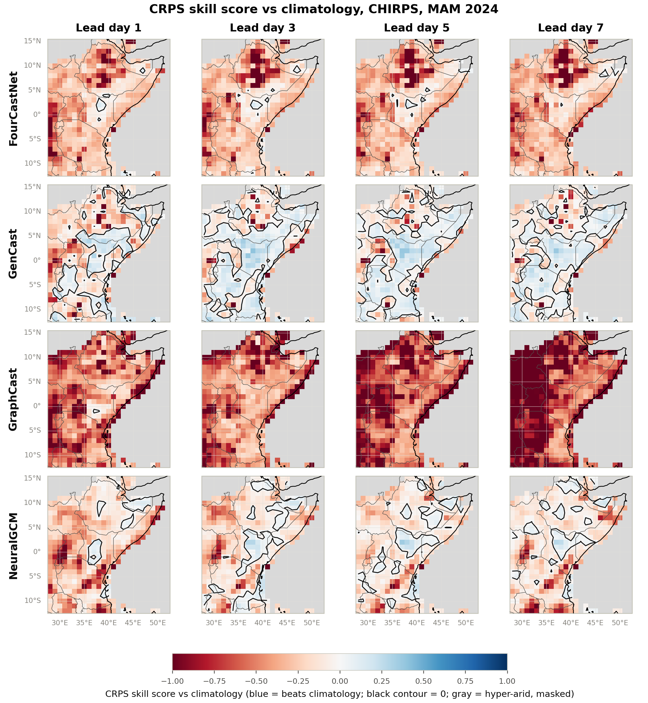
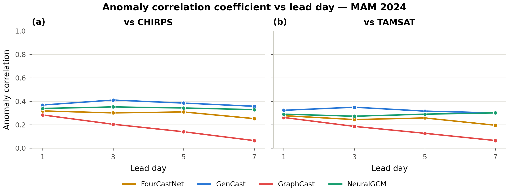
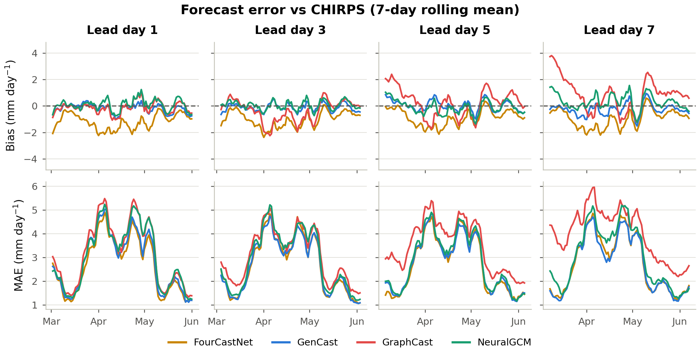
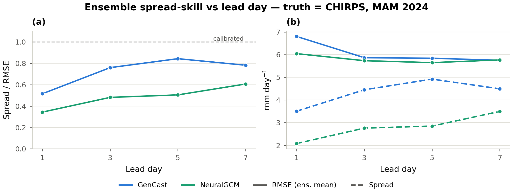
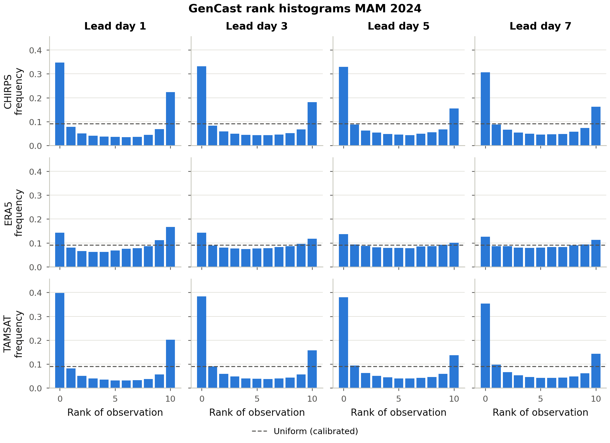

Scorecard — MAM 2024, vs CHIRPS, lead day 1 unless noted
| Model | Type | CRPS / MAE ↓ (mm day⁻¹) | ACC ↑ (day 1 → 7) | Bias signature | Event CSI ↑ | Beats climatology? |
|---|---|---|---|---|---|---|
| GenCast | ensemble (diffusion) | 2.25 (fair CRPS; flattest with lead) | 0.43 → 0.44 (best, most stable) | ≈ unbiased (−0.19) | 0.54 | Yes — equatorial belt, holds to day 7 |
| FourCastNet | deterministic | 2.66 (MAE) | 0.41 → 0.34 | Dry (−1.18) | 0.49 | Mixed — negative over northern Horn |
| GraphCast | deterministic | 3.15 (MAE) | 0.36 → 0.19 (fastest decay) | Wet drift (−0.14 → +0.84) | 0.51 | No — mostly worse, worsens with lead |
| Climatology | 21-yr baseline | reference | — | — | — | reference |
Verdict: GenCast is the strongest system on every axis, but its ensemble is overconfident (finding 4 below), and no model reliably beats climatology outside the equatorial belt.
1. GenCast is the strongest overall
It has the lowest CRPS (~2.0 mm day⁻¹), the highest and most stable anomaly correlation, the best-calibrated exceedance probabilities, and is the only model that beats climatology, over the equatorial belt.

Blue = beats the CHIRPS climatology baseline (CRPSS > 0). GenCast holds a blue equatorial band out to lead day 7; GraphCast and FourCastNet are mostly red (worse than climatology). Full set: the Skill vs climatology tab.
2. All models have limited deterministic skill
Anomaly correlation stays below the 0.6 "useful-skill" guide at every lead, and degrades with lead time for two of the three models — these are genuinely hard, convection-dominated rains.

No model reaches the ACC = 0.6 guide at any lead. GenCast (≈0.36–0.41) is highest and flattest; GraphCast degrades fastest, from ≈0.28 to ≈0.09 by day 7. Full set: the Deterministic tab.
3. Distinct, stable bias signatures
FourCastNet is systematically dry (≈ −1.2 mm day⁻¹); GraphCast drifts wet at longer leads (+0.84 mm day⁻¹ by day 7); GenCast is nearly unbiased in the domain mean.

Seven-day rolling bias (top) and MAE (bottom) vs valid date, one column per lead day. The three models keep their sign and character throughout the season. Full set: the Deterministic tab.
4. GenCast is under-dispersive (overconfident)
Spread–skill ratio rises from ~0.5 (day 1) toward ~0.8 (days 5–7) but never reaches the calibrated SSR = 1 line, and rank histograms are U-shaped — the ensemble is too narrow, especially at short lead.

Left: SSR vs lead, with the under-dispersive region (SSR < 1) shaded. Right: the two ingredients (RMSE, spread) plotted separately. Full set: the Probabilistic tab.
5. Results are observation-sensitive
Skill and calibration shift visibly across CHIRPS / ERA5 / TAMSAT, underscoring observational uncertainty over this data-sparse region.

Against CHIRPS and TAMSAT the rank histograms are sharply U-shaped (rank 0 ≈ 0.47–0.55); against ERA5 they are far flatter (rank 0 ≈ 0.19) — GenCast looks much better calibrated against the reanalysis it was partly trained near than against the independent gauge–satellite products. Full set: the Probabilistic tab.